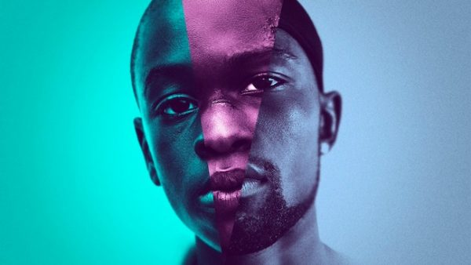

MOONLIGHT: SOB A LUZ DO LUAR
O filme ''moonlight: sob a luz do luar'', conta a história de Chiron, um garoto crescido na perifeira de Miami. Chiron é considerado um garoto ''diferente'', sendo vítima de bullying de seus colegas por um motivo não identificado no início do filme. Com o passar de história, Chiron conhece Juan, um traficante do bairro onde Chiron mora, que, futuramente, seria a figura paterna que Chiron nunca teve.
Com o passar do filme, podemos notar a presença de cores melancólicas, dando uma certa profundidade as cenas. Podemos notar isso na cena onde Chiron e seu amigo Kevin, estão na praia e acabam descobrindo mais sobre o que realmente sentiam um pelo o outro. Sentados em uma praia, eles se tornam azuis a luz do luar, trazendo toda a confusão e tristexa que Chiron sente durante o filme, principalmente naquela cena.
 Tematica LGBTQIA+
Vencedor do Oscar de Melhor Roteiro Adaptado
Vencedor do Oscar de Melhor Filme de 2017